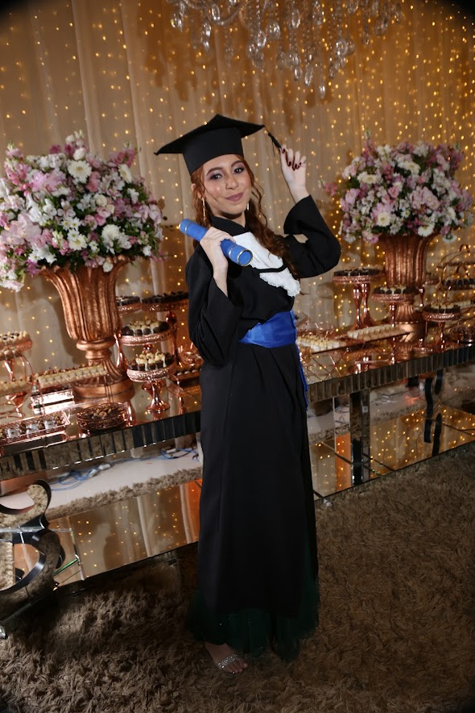
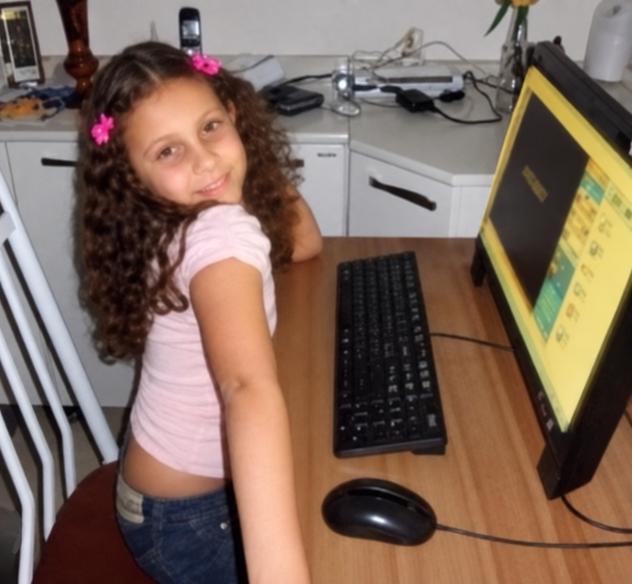

Aplicação web
Sistema de Biblioteca
Aplicação para organizar livros, clientes e aluguéis, conectando a interface a uma API e a um banco de dados relacional.
Ver repositórioEstudante de Sistemas de Informação
Desenvolvimento web · Full Stack

Oi, sou a Jho! Estudo Sistemas de Informação na Universidade Federal de Ciência e Inovação e me interesso por desenvolvimento web Full Stack. Busco minha primeira oportunidade de estágio em TI.
Conheça minha históriaum pouco sobre mim
Sou apaixonada por tecnologia e movida pela curiosidade de entender como as coisas funcionam — e como podem funcionar melhor. Estudo Sistemas de Informação na Universidade Federal de Ciência e Inovação, com previsão de conclusão em dezembro de 2029.
Como voluntária no InovaFri Lab, vivi na prática o desenvolvimento de um site institucional em equipe. Essa experiência me aproximou de processos ágeis, arquitetura de software e documentação técnica.
Sou organizada, persistente e atenta aos detalhes. Gosto de investigar um problema antes de propor soluções, comunicar ideias com clareza e ouvir diferentes perspectivas. Valorizo a colaboração, a criatividade e a vontade de aprender.
Estou experimentando desenvolvimento web e automação com agentes de inteligência artificial — assuntos que me despertam muita curiosidade e entusiasmo.
Fora da tecnologia, adoro ler e estudar inglês. Também estou aprendendo italiano e avançando aos poucos.

onde tudo começou
Minha curiosidade por tecnologia começou bem antes de eu pensar em programação. Desde criança, eu passava horas no computador por causa dos jogos e queria entender como tudo funcionava, até aprender a instalar mods e personalizar minhas experiências. Esta foto guarda um pedacinho daquele começo: eu já estava ali, perto do computador, movida pela curiosidade.
Em 2020, decidi transformar essa curiosidade em aprendizado técnico e comecei a estudar programação por meio de cursos gratuitos online. Meu primeiro “Hello, world!” foi em Python. Na mesma época, HTML e CSS despertaram meu lado criativo e me mostraram que eu também podia explorar o visual da web.
Desde então, sigo aprendendo e construindo meu caminho na área, sempre com vontade de entender melhor como as coisas funcionam e transformar ideias em experiências digitais.
ferramentas que venho explorando
Conhecimentos em desenvolvimento contínuo, construídos com prática e curiosidade.
Sempre aprendendo algo novo e colocando o conhecimento em prática.
ideias que ganharam forma
Aplicação web
Aplicação para organizar livros, clientes e aluguéis, conectando a interface a uma API e a um banco de dados relacional.
Ver repositórioExperimento interativo
Aplicação interativa feita com JavaScript para explorar números e praticar interações diretamente no navegador.
Ver repositórioSite pessoal
Um espaço para apresentar minha trajetória, meus interesses e os projetos que venho desenvolvendo na área de tecnologia.
Visitar portfóliovamos conversar?
Estou aberta a oportunidades de estágio, conversas sobre tecnologia e novas possibilidades de colaboração.